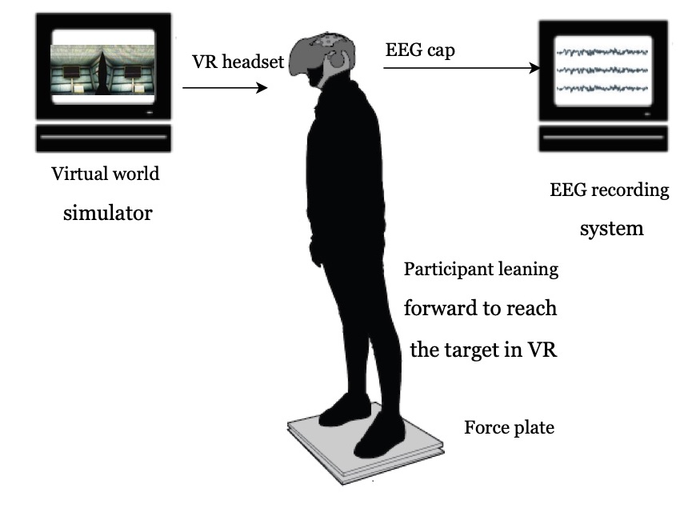
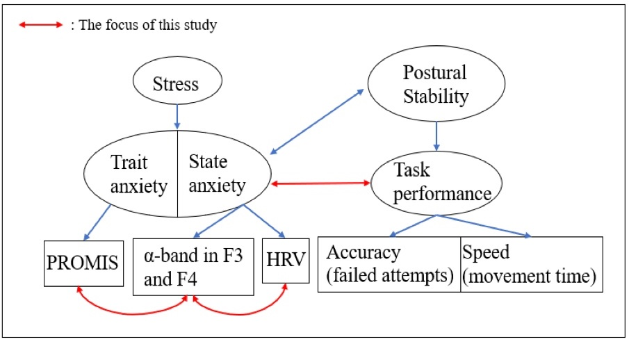
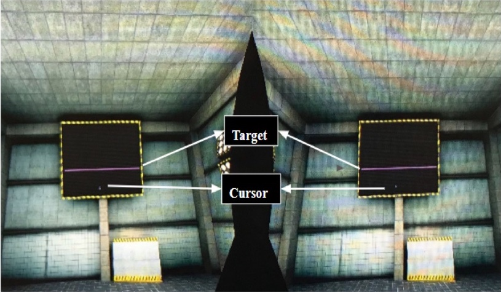
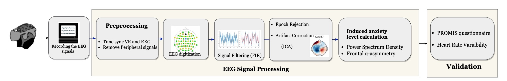

Abstract
We examine the feasibility and effectiveness of a virtual reality (VR) based experimental setup to monitor and modify the neural and physiological anxiety-related responses to balance-demanding target-reaching whole body leaning tasks. In our system, electroencephalography (EEG) and electrocardiography (EKG) signals are used to analyze the subjects’ real-time neural and cardiac activities, respectively, while subjects perform accuracy-constrained whole body movements as quickly and as accurately as possible in high fall-risk VR conditions. Salient features of neural and cardiac responses are analyzed to monitor anxiety-related changes in subjects during the performance of balance-demanding tasks. Validation of the proposed framework, integrating VR and sensor-based monitoring, may pave the way to smart and intuitive human-robot or brain-computer interface systems that can detect anxiety in human users during the performance of demanding motor tasks. The application of linear and radial basis function support vector machine classifiers suggest good performance in detecting anxiety using power of the alpha band from F3 and F4 channels of the EEG head cap. Our results suggest that frontal alpha asymmetry (FAA) may be used as bio-marker for quantifying both trait and state anxiety, and further conclude that state anxiety is correlated with motor task performance.
Core contributions
- 1A VR test-bed for anxietyA whole-body leaning task at virtual heights, with EEG, EKG and a force plate recording together.
- 2Heart rate as ground truthDrops in heart rate variability mark which trials made each person anxious.
- 3Two channels are enoughAlpha power from just two frontal EEG channels detects anxiety almost as well as all 63 channels and bands.
- 4Trait anxiety shows in EEGPeople who report everyday anxiety have more negative frontal alpha asymmetry.
- 5Anxiety tracks performanceFrontal alpha asymmetry trends more negative when people miss more targets.
- 6Toward anxiety-aware systemsA step toward brain-computer and human-robot interfaces that sense stress during demanding motor tasks.
Method

1Leaning task in VR
Ten healthy young adults (five women) stood on a force plate wearing an HTC Vive headset. Leaning forward moved a cursor up toward a target; each target had to be held for 200 ms. Targets sat at 84% of the person’s maximum forward lean on a level virtual surface, or at 56% with a large virtual drop below the platform, the high fall-risk condition. Each person reached 240 targets.

2EEG and heart signals
EEG from 64 channels was filtered, cleaned of bad epochs, and stripped of eye and muscle artifacts with ICA. From the clean signal we computed frontal alpha asymmetry (FAA): the log ratio of alpha power (8–14 Hz) between the left (F3) and right (F4) frontal channels. In parallel, EKG gave heart rate variability (HRV) from the R peaks; lower HRV signals more anxiety.

3Classifying anxiety
For each trial, an F-test comparing HRV with the person’s baseline labelled it anxiety-inducing or not (71.7% of trials were). We then trained eight classifiers to predict this label from EEG, using either alpha power from F3 and F4 only or all five frequency bands from all 63 channels, with 5-fold cross-validation.
Results
1Detecting anxiety
- Two frontal channels: linear and RBF SVMs reach an F1 score of 0.83 using only F3 and F4 alpha power.
- All channels add little: the best full-EEG model (KNN) reaches 0.85, so a much simpler, cheaper setup could suffice.
| Classifier | EEG features | Precision | Recall | F1 score |
|---|---|---|---|---|
| SVM, linear | Alpha, F3 & F4 | 0.70 | 1.00 | 0.83 |
| SVM, RBF kernel | Alpha, F3 & F4 | 0.70 | 1.00 | 0.83 |
| XGBoost | Alpha, F3 & F4 | 0.73 | 0.93 | 0.81 |
| K-nearest neighbors | All bands, 63 channels | 0.84 | 0.92 | 0.85 |
| Random forest | All bands, 63 channels | 0.81 | 0.84 | 0.81 |
2Trait anxiety
- Everyday anxiety shows in the EEG: people who reported sometimes feeling anxious had a more negative FAA (−0.39) than those who never did (−0.13); t = 2.13, p = 0.039.
3Anxiety and performance
- Worse performance, more anxiety: FAA was more negative in a person’s worse trials (−0.34) than in their better ones (−0.26); p = 0.06, a trend.
- Measured in real time: FAA and failed attempts were tracked in 10-second rolling windows, the kind of signal a live neurofeedback system could use.
BibTeX
@inproceedings{kaur2019using,
title = {Using Virtual Reality to Examine the Neural and
Physiological Anxiety-Related Responses to
Balance-Demanding Target-Reaching Leaning Tasks},
author = {Kaur, Rachneet and Sun, Rongyi and Ziegelman, Liran and
Sowers, Richard and Hernandez, Manuel E},
booktitle = {2019 IEEE-RAS 19th International Conference on
Humanoid Robots (Humanoids)},
pages = {1--7},
year = {2019},
doi = {10.1109/Humanoids43949.2019.9035020}
}Acknowledgments
We would like to thank all the subjects who collaborated with their time and data for the study, and JUMP ARCHES for financial support.